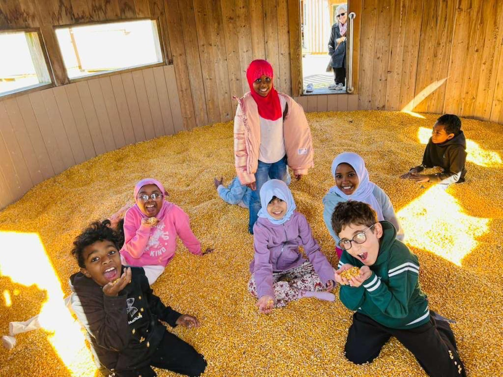
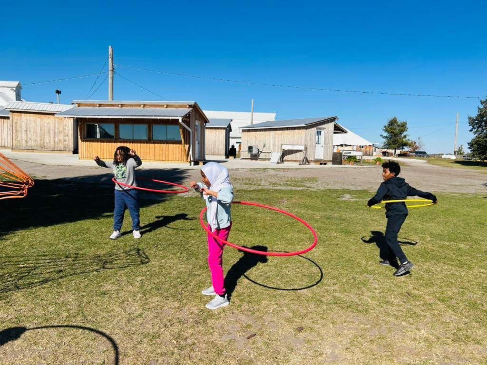
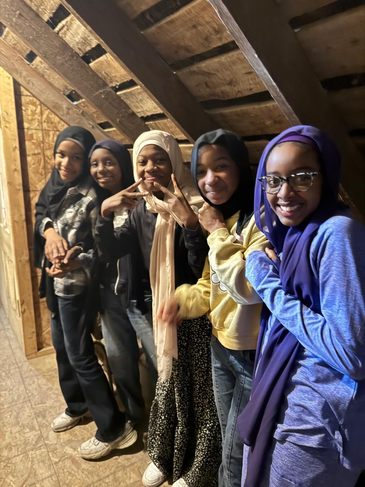
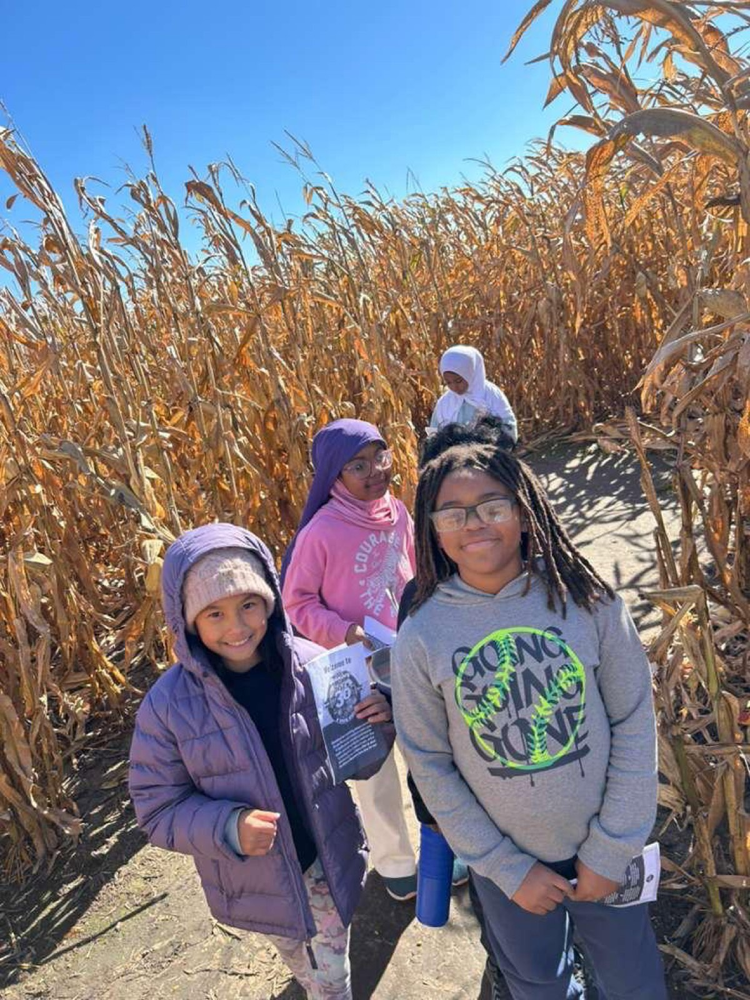

Life at ICCRA goes well beyond the screen
Because in-person days are held inside the Masjid, students grow up inside a community — not just a classroom.



Field trips with a purpose
Outings are planned directly around what's being studied in class — turning a unit on ecosystems or local history into a real place students can stand in.
Community & Masjid events
From Ramadan programming to community iftars and holiday gatherings, students are active participants in the life of the Masjid, not visitors to it. See our Community Gatherings calendar.
Leadership opportunities
Older students take on mentorship roles with younger classmates, help lead school events, and are given real responsibility inside the ICCRA community.
A classroom that doesn't feel remote
Live, proctor-supervised classes and daily in-person Islamic studies mean the "online school" label undersells the experience — students learn alongside real classmates, every day.